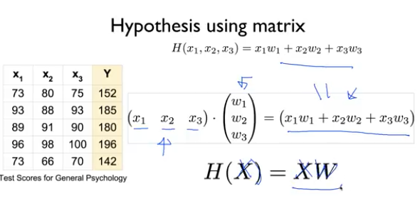

여러개의 Feature를 가진 Linear Regression
여러개의 Feature를 가진 Linear Regression
다수의 Feature로 라벨을 예측해야 하는 경우
Recap
- Hypothesis
- Cost Function
- Gradient descent algorithm
다수의 변수가 있을 경우
기존에는 H(x) = Wx + b의 단순한 형태의 공식으로 모델을 학습시킬 수 있었습니다.
근데 만약에 x1 , x2 , x3 로 3개의 아이템이 있다면 어떻게 해야 할까요?
H(x1, x2, x3) = w1x1 + w2x2 + w3x3 + b 로 나타낼 수 있습니다.
Matrix
이렇게 특성이 추가될 떄 마다 옆으로 점점 늘어나는 방식은 너무 보기 힘들고 효율적이지 않습니다.
그래서 matrix에서 곱셈만 사용해서 공식을 만들려 합니다.

Shape
우리가 지금까지 사용했던 데이터 셋들은 1차원 배열이었습니다.
그렇지만 이제부터 특성이 많아지니까 다차원 배열을 만들어 처리해야 합니다.
이 역시 이제 표시하는 방법이 변경되었는데 아래와 같습니다.

이렇게 W의 Shape를 몰라도 입력과 출력을 W의 Shape를 알 수 있다.

실습
실제 데이터를 학습시킬 경우에는 대부분 복수의 특성을 다뤄야 한다.
이렇게 복수의 데이터가 있다고 가정해보자.
x1_data = [73,93,89,96,73]
x2_data = [80,88,91,98,66]
x3_data = [75,93,90,100,70]
y_data = [152,185,180,196,142]

기존에서 사용했던 방식으로 코드를 작성하면 다음과 같다.
class
# Linear Regression
class LinearModel:
def __call__(self,x1,x2,x3):
return x1*self.w1 + x2*self.w2 + x3*self.w3 + self.b
def __init__(self):
self.w1 = tf.Variable(tf.random.normal([1]), name = 'w1')
self.w2 = tf.Variable(tf.random.normal([1]), name = 'w2')
self.w3 = tf.Variable(tf.random.normal([1]), name = 'w3')
self.b = tf.Variable(tf.random.normal([1]), name = 'b')
cost function
# cost function
def cost(linear_model, x1, x2, x3, y):
return tf.reduce_mean(tf.square(linear_model(x1,x2,x3) - y))
train function
def train(linear_model, x1, x2 ,x3, y, steps, lr = 0.01):
steps_list, losses = [], []
for step in range(steps):
with tf.GradientTape() as tape:
current_loss = cost(linear_model, x1, x2, x3, y)
lr_w1,lr_w2,lr_w3,lr_b = tape.gradient(current_loss, [linear_model.w1,
linear_model.w2,
linear_model.w3,
linear_model.b])
linear_model.w1.assign_sub(lr * lr_w1)
linear_model.w2.assign_sub(lr * lr_w2)
linear_model.w3.assign_sub(lr * lr_w3)
linear_model.b.assign_sub(lr * lr_b)
steps_list.append(step)
losses.append(cost(linear_model, x1, x2, x3, y).numpy())
if step % 100 == 0:
print(f'step: {step}, RMSE: {cost(linear_model, x1, x2, x3, y)}')
plt.scatter(steps_list, losses)
run
linear_model = LinearModel()
train(linear_model, x1_data, x2_data,x3_data,y_data, 500, lr = 0.001)

너무 번거롭고 어느 부분이 문제인지도 잘 모르겠다.
그래서 Matrix로 구현해서 다뤄야 좀 쉽다.
x_data = tf.constant([
[73.,80.,75.],
[93.,88.,93.],
[89.,91.,90.],
[96.,98.,100.],
[73.,66.,70]
])
y_data = tf.constant([[152.],[185.],[180.],[196.],[142.]])
class 쪽 역시 Matrix 연산으로 수정해야 한다. 다행히 행렬곱을 지원해서 쉽게 함수를 호출해서 처리한다.
#class
class LinearModel:
def __call__(self, X):
return tf.matmul(X, self.W) + self.b
def __init__(self):
self.W = tf.Variable(tf.random.normal([3, 1]), name = 'weight')
self.b = tf.Variable(tf.random.normal([1]), name = 'bias')
# cost funcion
def cost(linear_model, X, Y):
return tf.reduce_mean(tf.square(linear_model(X) - Y))
학습 함수도 수정했다.
def train(linear_model, X, Y, steps, lr = 0.01):
steps_list, losses = [], []
for step in range(steps):
with tf.GradientTape() as tape:
current_loss = cost(linear_model, X, Y)
lr_W, lr_b = tape.gradient(current_loss, [linear_model.W, linear_model.b])
linear_model.W.assign_sub(lr * lr_W)
linear_model.b.assign_sub(lr * lr_b)
steps_list.append(step)
losses.append(cost(linear_model, X, Y).numpy())
if step % 100 == 0:
print(f'step: {step}, RMSE: {cost(linear_model, X, Y)}')
plt.scatter(steps_list, losses)
실행 결과
linear_model = LinearModel()
train(linear_model, x_data, y_data, 800, lr = 0.00001)